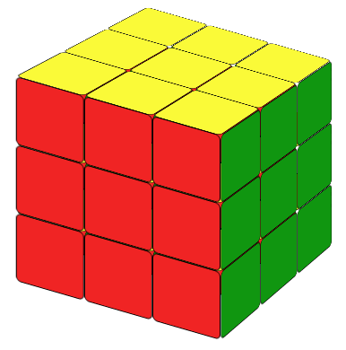

The Rubik's Cube is a 3-D combination puzzle invented in 1974 by Hungarian sculptor and professor of architecture Erno Rubik , originally called the Magic Cube. It's very difficult to solve if you don't know how. Do you know in how many ways we could arrange the cube?
43,252,003,027,486,856,000
That's approximately 43 quintillion.
It's fun!
It improves your hands' flexibility.
It keeps your brain healthy.
It helps you make good friends.
It is also an official sport. There are a lot of competitions around the world.
And again, it is fun!
2014 RUBIK'S CUBE US NATIONAL CHAMPIONSHIPS
BSD Open 2016 Official Competition Rubik's cube
This website is the beginning of your Rubik's cube journey. Let's begin!